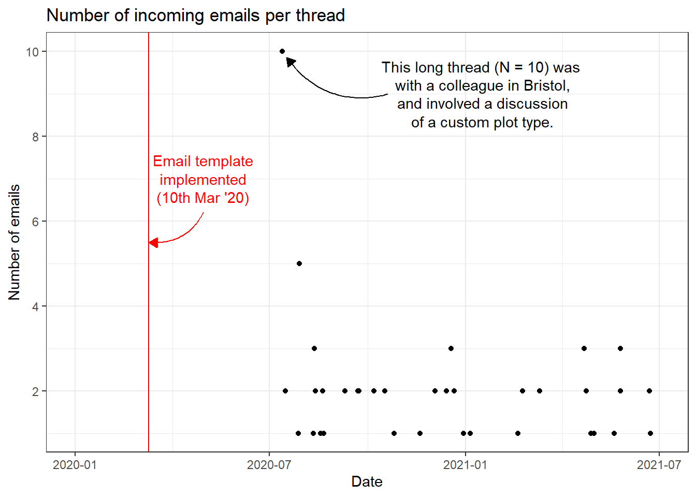

As part of my maintenance of the robvis R package, I regularly receive emails from users of the Shiny app version of the tool.See here. One of the main issues I encounter when dealing with these emails is that the initial email does not usually contain all the information I need to help the user (e.g. what data file caused the issue), and so I end up replying to request this basic information.
To try and head this issue off at the pass, I implemented a email template in March 2020, so that when users click the “Email me!” button on the Shiny app, an email is created and pre-populated with the following text:
This is a template to help me fix your issue as quickly as possible. Please make sure you:
- detail your issue, and where it occurred [e.g. data upload, generating graphs]
- attach the file you were trying to upload
Thanks,
Luke
Following some reading on self-evaluation/self-experimentation, I had the idea to explore whether this email template was actually helping in terms of my workload by comparing the total number of emails in threads related to the robvis grouped by whether the thread occurred before or after the email template was implemented.Commonly known as a “before-and-after study”. See here. My hypothesis was that if the template was indeed encouraging people to provide the info I needed to help them right off the bat, threads after March 2020 should contain a smaller total number of emails.
I recently have become quite good at labelling emails related to the different R packages I maintain and moving them to dedicated Outlook subfolders. As such, I was able to follow a very helpful tutorial to export the relevant robvis Outlook folder to a CSV file,See here. making sure to use the Outlook->Access->CSV route so that the final dataset contained information on the date/time of each email. Once imported, I cleaned the data using the following chain:
library(dplyr)
df <-
# Read in the data
read.csv("robvis_emails.csv",
stringsAsFactors = F,
header = F) %>%
# Rename the v. unhelpful variable names and select the relevant ones
rename(
date = V15,
text = V14,
subject = V5,
sender = V6,
subject_normalised = V19
) %>%
select(date, sender, subject, subject_normalised, text) %>%
# Remove the weird forwarding syntax in one email
mutate(subject_normalised = stringr::str_replace(subject_normalised,
"Antw: RE: ",
"")) %>%
# Format dates and trim character variables
mutate(date = as.Date(date, "%d/%m/%Y %H:%M:%S")) %>%
mutate_if(is.character, stringr::str_trim) %>%
# Group by sender/subject and get count and first date by group
group_by(sender, subject_normalised) %>%
summarise(Number = n(), Date = min(date)) %>%
ungroup()One interesting thing I noticed is that, because of the way Outlook works, only the incoming emails (i.e. those sent to my email) in each thread are counted. As a result, several threads appear to only have a single email in them, but in reality, the users emailed me, I emailed them back and then never heard from them again. I think this is because Outlook deals with incoming messages and sent messages differently, but I’m not 100% sure.
I then quickly plotted the data to have a look at the date range it covered:
I used the ggannotate widget to help create the annotations for this plot.

As illustrated in the figure, I apparently only started adding emails to the robvis Outlook subfolder after July 2020. As the email template was implemented in March 2020, my plan to do a before-and-after comparison to see if it had any impact on the number of emails in each thread was scuppered.
I could always go back through my emails from before July 2020 and categorise them appropriately, or alternatively, import my entire inbox and come up with a data cleaning plan that would extract the relevant emails. However, as this was intended as a quick exercise, I decided to park the analysis and move on to something else.
Still, it gave me an excuse to work with email data in R and practice annotating ggplot2 figures, so not a total loss!